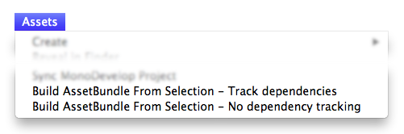

Creating Asset Bundles in Unity 4
In versions of Unity earlier than Unity 5, assets had to be selected and added to bundles using editor scripts alone. (In Unity 5 we provide tools in the editor to assign assets to specific Bundles). This information is provided for those working on legacy projects in Unity 4, and speaks assuming you are using Unity 4.
To create an Asset Bundle you need to use the BuildPipeline editor class. All scripts using Editor classes must be placed in a folder named Editor, anywhere in the Assets folder. Here is an example of such a script in C#:
// Legacy Unity 4 example. Not for use in Unity 5 & onwards
using UnityEngine;
using UnityEditor;
public class ExportAssetBundles {
[MenuItem("Assets/Build AssetBundle")]
static void ExportResource () {
string path = "Assets/myAssetBundle.unity3d";
Object[] selection = Selection.GetFiltered(typeof(Object), SelectionMode.DeepAssets);
BuildPipeline.BuildAssetBundle(Selection.activeObject, selection, path,
BuildAssetBundleOptions.CollectDependencies
| BuildAssetBundleOptions.CompleteAssets);
}
}
An Editor script does not need to be applied to a GameObject, it is instead used by the Editor. This previous example will create a new item in the "Assets" menu of your editor called "Build AssetBundle".
To use this example:
- Create a C# script file named ExportAssetBundles.cs, inside an folder named Editor, in the Project View.
- Select the Asset or Assets in your project folder that you wish to make into an AssetBundle.
- Select Build AssetBundle from the Assets menu. Click "Save" to create the AssetBundle.
- The first line of the ExportResource function sets the path of your AssetBundle.
- The next line sets the selection to be made into an AssetBundle as the objects selected in the Project window.
The BuildAssetBundle function is the line that creates the AssetBundle and saves it to the specified location. The first parameter specifies the mainAsset, which is a special Asset that can be obtained directly with the mainAsset property when loading Assets from the AssetBundle. It is not mandatory to set a main Asset, if this is not going to be used you can use null for the parameter. The second parameter is the array of objects that will make up the AssetBundle. The third parameter is the location on disk that the AssetBundle will be saved to. The final parameters are the build flags or options used when building AssetBundles. These BuildAssetBundleOptions can be combined using the bitwise OR operator.
Building AssetBundles should be a pre-publish step which happens only once and with a single function call, for example, with a Menu Item that builds all the AssetBundles. As you develop your application you should write helper scripts that can build all your AssetBundles for a target platform with a single click or in batchmode without user intervention.
There are three class methods you can use to build AssetBundles:
BuildPipeline.BuildAssetBundle allows you to build AssetBundles of any type of asset.
BuildPipeline.BuildStreamedSceneAssetBundle is used when you want to include only scenes to be streamed and loaded as the data becomes available.
BuildPipeline.BuildAssetBundleExplicitAssetNames is the same as BuildPipeline.BuildAssetBundle but has an extra parameter to specify a custom string identifier (name) for each object.
An example of how to build an AssetBundle
Building asset bundles is done through editor scripting. There is basic example of this in the scripting documentation for BuildPipeline.BuildAssetBundle.
For the sake of this example, copy and paste the script from the link above into a new C# script called ExportAssetBundles. This script should be placed in a folder named Editor, so that it works inside the Unity Editor.

Now in the Assets menu, you should see two new menu options.

Build AssetBundle From Selection - Track dependencies. This will build the current object into an asset bundle and include all of its dependencies. For example if you have a prefab that consists of several hierarchical layers then it will recursively add all the child objects and components to the asset bundle.
Build AssetBundle From Selection - No dependency tracking. This is the opposite of the previous method and will only include the single asset you have selected.
For this example, you should create a new prefab. First create a new Cube by going to GameObject > 3D Object > Cube, which will create a new cube in the Hierarchy View. Then drag the Cube from the Hierarchy View into the Project View, which will create a prefab of that object.
You should then right click the Cube prefab in the project window and select Build AssetBundle From Selection - Track dependencies. At this point you will be presented with a window to save the "bundled" asset. If you created a new folder called "AssetBundles" and saved the cube as Cube.unity3d, your project window will now look something like this.

At this point you can move the AssetBundle Cube.unity3d elsewhere on your local storage, or upload it to a server of your choice.
An example of how to change the properties of the assets when building an Asset Bundle
You can use AssetDatabase.ImportAsset to force reimporting the asset right before calling BuildPipeline.BuildAssetBundle, and then use AssetPostprocessor.OnPreprocessTexture to set the required properties. The following example will show you how to set different texture compressions when building the Asset Bundle.
// Legacy Unity 4 example. Not for use in Unity 5 & onwards.
// Builds an asset bundle from the selected objects in the project view,
// and changes the texture format using an AssetPostprocessor.
using UnityEngine;
using UnityEditor;
public class ExportAssetBundles {
// Store current texture format for the TextureProcessor.
public static TextureImporterFormat textureFormat;
[MenuItem("Assets/Build AssetBundle From Selection - PVRTC_RGB2")]
static void ExportResourceRGB2 () {
textureFormat = TextureImporterFormat.PVRTC_RGB2;
ExportResource();
}
[MenuItem("Assets/Build AssetBundle From Selection - PVRTC_RGB4")]
static void ExportResourceRGB4 () {
textureFormat = TextureImporterFormat.PVRTC_RGB4;
ExportResource();
}
static void ExportResource () {
// Bring up save panel.
string path = EditorUtility.SaveFilePanel ("Save Resource", "", "New Resource", "unity3d");
if (path.Length != 0) {
// Build the resource file from the active selection.
Object[] selection = Selection.GetFiltered(typeof(Object), SelectionMode.DeepAssets);
foreach (object asset in selection) {
string assetPath = AssetDatabase.GetAssetPath((UnityEngine.Object) asset);
if (asset is Texture2D) {
// Force reimport thru TextureProcessor.
AssetDatabase.ImportAsset(assetPath);
}
}
BuildPipeline.BuildAssetBundle(Selection.activeObject, selection, path, BuildAssetBundleOptions.CollectDependencies | BuildAssetBundleOptions.CompleteAssets);
Selection.objects = selection;
}
}
}
// Legacy Unity 4 example. Not for use in Unity 5 & onwards.
// Changes the texture format when building the Asset Bundle.
using UnityEngine;
using UnityEditor;
public class TextureProcessor : AssetPostprocessor
{
void OnPreprocessTexture() {
TextureImporter importer = assetImporter as TextureImporter;
importer.textureFormat = ExportAssetBundles.textureFormat;
}
}
You can also control how the asset is imported using the AssetDatabase.ImportAssetOptions.
In a test environment, you sometimes need to test a change that requires AssetBundles to be rebuilt. In these cases, it is advisable to use the option BuildAssetBundleOptions.UncompressedAssetBundle when you build the AssetBundles. This makes it faster to build and load the AssetBundles but they will also be bigger and therefore take longer to download.
Building AssetBundles in a production enviroment
When first using AssetBundles, it may seem enough to manually build them as seen in the previous example. But as a project grows in size and the number of assets increases, doing this process by hand is not efficient. A better approach is to write a function that builds all of the AssetBundles for a project. You can, for example, use a text file that maps Asset files to AssetBundle files.